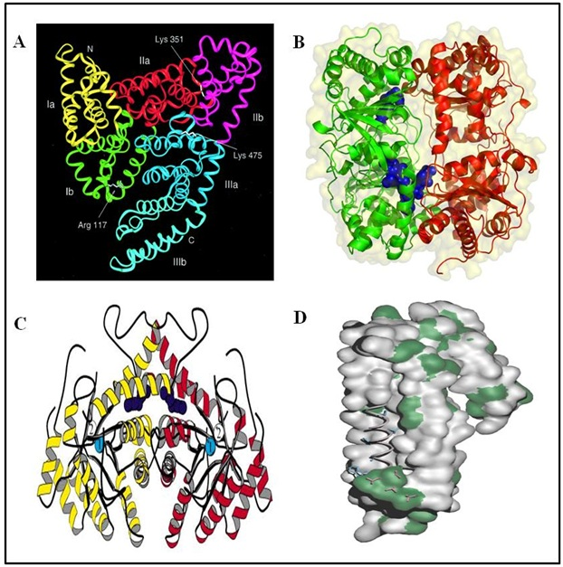

To determine accurate molecular weight of intact proteins using MALDI TOF MS.

Theory
Mass spectrometry deals with the accurate mass measurement by producing charged molecular species in vacuum and their separation by magnetic and electric fields based on mass to charge (m/z) ratio. MALDI is an efficient process for generating gas-phase ion of peptides and proteins for mass spectrometric detection. TOF is a mass analyzer in which the flight time of the ion from the source to the detector is correlated to the m/z of the ion. MALDI mass spectrometry is an attractive approach for determination of accurate molecular weight of intact proteins. Choice of the matrix depends on the type of analyte to be analysed. Majority of the matrices are suitable for UV laser. For some particular analytes (oligonucleotides and some non-covalent compounds), infrared laser (IR-MALDI) is used. Succinic acid is the commonly used matrix for IR-MALDI. However, water can be used in IR-MALDI since IR laser ionization is not restricted to any specific matrix.
One of the major advantage of MALDI is that is allows rapid analysis. TOF mass analyzer is mostly combined with MALDI, however, implication of FT-ICR analyzer can provide very accurate and reliable information regarding molecular mass. In this experiment, we will discuss the determination of molecular mass of four intact proteins; serum albumin, aldolase, amyloid A and apolipoprotein A-I, using MALDI-TOF mass spectrometry.

Figure 1.Crystal structures of the serum albumin (A), aldolase (B), amyloid A (C) and apolipoprotein A-I(D).Molecular weight of these four proteins were determined using MALDI-TOF MS

In case of determination of the accurate mass of the intact proteins, the extracted protein is mixed with suitable matrix solution in a microcentrifuge tube, mixed properly and the uniform mixture is deposited directly on the MALDI plate. Spotting can also be accomplished using the sandwich method (Details of the protocol is provided in Experiment 5). After drying, the plate is inserted in MALDI instrument and analysis is performed. The instrument operation is same as described under Experiment 6, expect the linear mode is selected instead of reflectron mode. Result of the MALDI-TOF analysis is saved either as ASCII files or the accurate mass of the protein is determined from the pick position.
- Switch on the System
- Click on "Launchpad" and then open "Kompact Software".
- Go to instrument.
- Open " Acquistion window".
- Click on " Exp. Tech".
- Click on "open door".
- Insert the MALDI plate (face up with the cut-off corner to the front )
- In Exp. Tech , click close door .
- In Exp. Tech , click close door .
- In Exp. Tech window select tuning mode : Linear mode
- Set the mass range e.g. 10-100000 Da(depending upon the protein sample).
- Then go to fining tab . Set the power to 50 , profiles to 1000 and shots to 2.
- Set the "Ion gate" OFF (for (PSD ion gate should be kept on).
- Then right click on the yellow target in the Acquisition window and select go to Location and type the location of pep-mix. e.g. D1.
- Click on "processing" then peak processing " . Typically Smoothing is off (for PSDit is average ) and Baseline subtraction is used.
- Click on "Monoisotopic peak" . select " All display" and click " Apply to ".
- Click on "Fire".During acquisition , check the resolution of the higest mass standard peaks.
- To check the reolution during an acquisition, click "suspend" to pause the aquisition . When the resolution has been measured , click "Resume" to continue the aquisition . For peptide standard ACTH fragment 18-19 (m/z 2465.20), the resolution should be >5,000. If resolution is much lower then reduce the laser power to improve resolution.
- Move the target to teh sweet spot .Use clear data button to restart the accumulationonce a satisfactory position has been found on the sample spot.
- Once a satisfactory spectrum has been obtained , click "Abort to stop acquisition .
- Click "Store" to save the spectrum.
- In calibration window create a calibration file . Insert the mass of calibration standards, calibrtae and save it.
- Now go to "Location" . Type the location for sample. And click of " FIRE" and look for a sweet spot by moving cursor . Once a satisfactory spectrum has been obtained , click " Abort and Store" to Stop and save the spectrum.
- Result of the MALDI-TOF analysis is saved either as ASCII files or the accurate mass of the protein is determined from the pick position .


References :
1. Baldwin MA. Protein identification by mass spectrometry: issues to be considered. Mol Cell Proteomics. 2004; 3, 1-9.
2. Hillenkamp F et al. Matrix-assisted laser desorption/ionization mass spectrometry of biopolymers. Anal Chem.1991, 63, 1193A-1203A.
3. Dave KA et al. Preparation and Analysis of Proteins and Peptides Using MALDI TOF/TOF Mass Spectrometry. Curr Protoc Protein Sci. 2011, Chapter 16:Unit16.13.
4. Hillenkamp F et al. Mass spectrometry of peptides and proteins by matrix-assisted ultraviolet laser desorption/ionization. Methods Enzymol. 1990, 193, 280-295.
5. Karas M et al. Ionization in matrix-assisted laser desorption/ionization: singly charged molecular ions are the lucky survivors. J Mass Spectrom. 2000, 35, 1-12.
6. Mirgorodskaya OA et al. Quantitation of peptides and proteins by matrix-assisted laser desorption/ionization mass spectrometry using (18) O-labeled internal standards. Rapid Commun Mass Spectrom. 2000, 14, 1226-1232.
7. Hillenkamp F et al. Mass spectrometry of peptides and proteins by matrix-assisted ultraviolet laser desorption/ionization. Methods Enzymol. 1990, 193, 280-295.
4. Zaluzec EJ et al. Matrix-assisted laser desorption ionization mass spectrometry: applications in peptide and protein characterization. Protein Expr Purif. 1995, 6, 109-123.

Instructors’ assignment:
Course instructors should explain the basic theory of MALDI-TOF and play the animation in class before providing the detailed experimental protocol. Once the students become familiar with the overall procedure they can be evaluated through the related questions provided under “Quiz” and “Assignment” sections.
Assignment for students:
Students are requested to click on the simulator window to run the animation and there are provisions for the learners to participate actively in the over-all MALDI-TOF instrumentation process by clicking on the equipments etc. using the computer mouse during the different steps of the instrumentation process. Students are strongly advised to go through the references provided in “Reference” section for further knowledge.
Questions:
- What is mass spectrometry?
- What are the different applications of mass spectrometry?
- What are the major components of a mass spectrometer?
- What will be the approximate molecular weight of a protein containing 250 amino acids?
- What is MALDI? How it can be used to detect molecular weight of intact proteins?
- What is principle of time-of-flight?
- Which properties are considered good for a matrix?